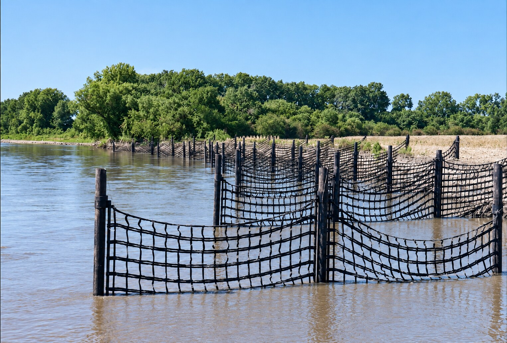

Moves Velocity Away
The system targets the energy driving bank migration rather than only covering the eroded surface.
River Training System
Work with the river, not against it.
A patented river-training system designed to redirect high-velocity and turbulent flow away from threatened banks, helping protect pipelines, transportation infrastructure and other critical assets.
Discuss Your SitePalisade in the field
Palisade addresses the force driving the damage instead of simply covering the failing edge. This sequence shows the progression from active bank loss to an engineered river-training system and a recovering shoreline.

Channel migration and concentrated flow are cutting into the bank and reducing the land and protective buffer behind it.

Permeable panels are arranged through the reach to move damaging velocity away from the bank while allowing water and sediment to move through the system.

As near-bank energy decreases, sediment can accumulate and vegetation can re-establish around the installed system.
How Palisade works
Palisade uses a series of permeable panels installed along the threatened bank. Their spacing, angle, length and permeability are engineered around site-specific river velocities, cross-section and sediment characteristics.
The system reduces velocity within the control zone and redirects stronger flow toward the channel. Where sediment conditions allow, that lower-energy zone can encourage accretion, vegetation and renewed bank stability.
Document channel geometry, flow behavior, bank movement, sediment conditions and nearby assets.
Determine how the river may respond to a proposed layout and whether river training is appropriate.
Set panel locations, angles, lengths and permeability for the site.
Install the system with limited disturbance and monitor how the control zone develops.
Why river training matters
The system targets the energy driving bank migration rather than only covering the eroded surface.
Variable spacing and permeability allow the system to be tuned for different flow and sediment conditions.
Multiple structures work together as a system instead of relying on one isolated point of protection.
Reduced near-bank velocity and sediment deposition can support riparian and aquatic habitat.
The goal is not an online diagnosis
If the river is migrating toward a pipeline, crossing, road or other asset, send us the location and any available history, surveys or field photos. Er-Con will evaluate whether river training, bank stabilization or another approach fits the conditions.